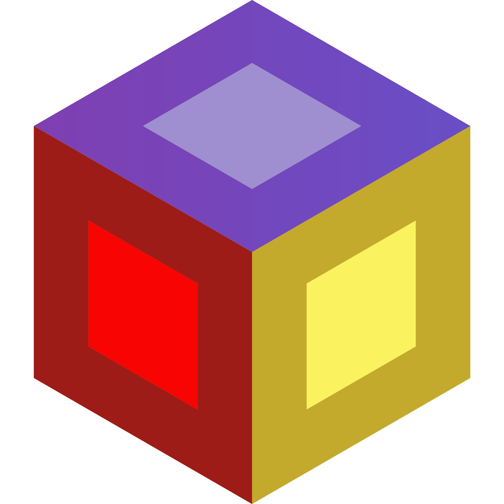

Tickpack
.
循环就是时钟
样例
运行
暂停
单步
重置
速度
10 tick/秒
导入 .tpk
导出 .tpk
分享
编辑 / 改编
tick
0
方块
0
空闲
新建标签页
重置布局
源码
main.tpk
源码已修改 — 运行以重建
Ctrl+Enter
世界
y=0 · ×1.0 · (0, 0)
适配
滚轮缩放 · 拖动平移 · 双击适配
按「运行」开始观察时间
数据包
复制
下载 .zip
—
计分板
tp
没有笔
触发
计分板空闲
运行日志
空闲
按「运行」开始 —— 每个 tick 输出一行
时间轴
已运行
0
/
0
编辑程序
main.tpk
0 / 0
松手导入 .tpk
支持 .tpk / .tp / .txt，单个文件
键盘快捷键
Space
暂停 / 继续
← / →
上一步 / 下一步
F
适应视图
R
重置到第 0 tick
Ctrl+Enter
编译并运行
Esc
关闭面板 / 收起源码抽屉 / 还原最大化的分栏
?
打开 / 关闭本面板
剧场
「编辑 / 改编」打开源码抽屉，Esc 收起
按 Esc 或 ? 关闭